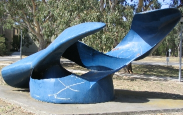

Travel
By train
The Bundoora campus is situated only a short walk from Macleod Station, which is on the Hurstbridge line. A timetable can be seen below. Times in bold are express trains.
| From city |
From Hurstbridge |
| 1:55pm |
1:46pm |
| 2:15pm |
2:06pm |
| 2:35pm |
2:26pm |
| 3:41pm |
4:06pm |
| 3:52pm |
4:12pm |
| 4:05pm |
4:32pm |
| 4:15pm |
4:42pm |
| 4:25pm |
5:02pm |
| 4:33pm |
5:08pm |
| 4:43pm |
5:21pm |
By bus
Additionally, there are a few bus lines that stop right at Waterdale Road. These include:
